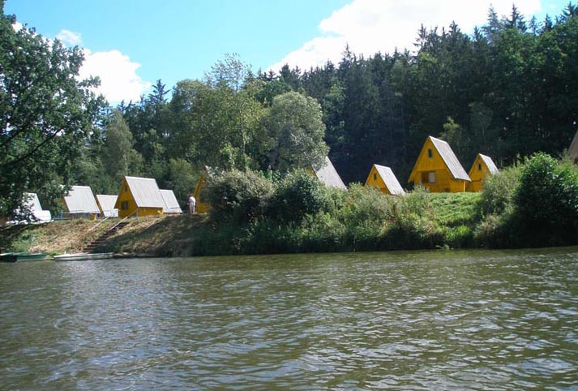
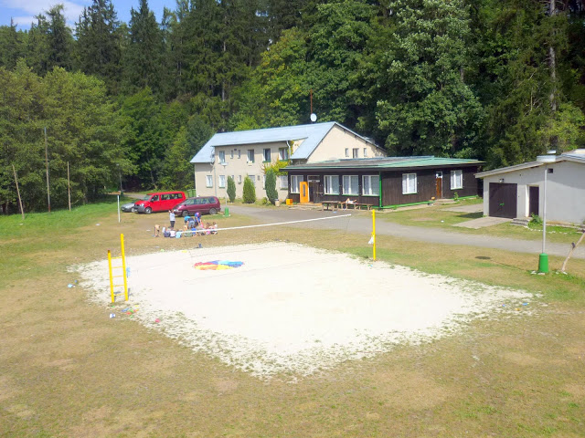

Nuzice 2021
Tábora 2021 se zúčastnilo 43 dětí. Námětem tohoto tábora byl biblický
příběh o Jozuovi. Stali jsme se starozákonními Izraelity a zakusili
jsme dobrodružné putování do země zaslíbené. Díky Bohu jsme prožili
týden plný her, zpívání, vyprávění příběhů z Bible, sportu a pohody.

Nuzice 2020
Na tábor Nuzice 2020 přijelo 47 dětí. Jako Moravští bratři jsme se
uchýlili do Ochranova k hraběti Zinzendorfovi a tam budovali nový
domov, tiskli knihy a vyjížděli na misie. Měli jsme se díky Bohu moc
dobře a koronavirová opatření se nás dotkla jen trochu.
Nuzice 2019
Tábora 2019 se zúčastnilo 51 dětí. Letos se celotáborová hra točila
kolem byznysu a tak jsme za body získané při hrách nakupovali
komodity. Hráli jsme spoustu her, zpívali a také jsme se učili z
Bible. Celodenní výlet nás tentokrát zavedl do jaderné elektrárny
Temelín.
Nuzice 2018
Tábora 2018 se zúčastnilo 48 dětí. Na týden jsme se přenesli do
husitské doby a stali se z nás stateční husité. Tomu také odpovídal
celodenní výlet do města Tábor. Každý bojovník potřebuje vyzbrojit,
proto jsme se z Bible učili o Boží zbroji.
Nuzice 2017
Tábora 2017 se zúčastnilo 50 dětí. V celotáborové hře jsme pokračovali
v putování s Mojšíšem a Izraelci po poušti. Odpovídalo tomu i horké
počasí, ale vedra se v přírodě u řeky dala snést. Děkujeme Bohu za
krásný týden, který jsme si mohli společně užít.

Nuzice 2016
Letošního tábora se zúčastnilo 51 dětí. Námětem se stal příběh Mojšíše
od jeho narození až po vyjití izraelského národa z Egypta. Díky Bohu
za krásný týden!
Nuzice 2015
Tábor 2015 se konal od 25.7 do 1.8. opět v kempu POHODA v chatkách na
břehu Lužnice. Přijelo 51 dětí a tábor byl úplně zaplněný už od konce
zimy. Tento týden jsme spolu s Nehemijášem budovali hradby města
Jeruzaléma.
Nuzice 2014
Tento tábor se konal od 2. do 9. srpna v kempu Pohoda na břehu Lužnice
nedaleko vesničky Nuzice. Přijelo 47 dětí. Tématem tábora byl příběh
Josefa. Prožili jsme týden plný her, koupání, zpívání s Michaelem a
vyprávění krásného biblického příběhu.
Čichořice 2013
Tábor 2013 se konal od 10. do 17. srpna v Čichořicích. Přijelo
rekordních 56 dětí. Prožili jsme indiánský týden plný her, zpívání,
kamarádství a hlavně Božího požehnání. Podívejte se na spoustu
fotografií.

Čichořice 2012
Poslední srpnový týden roku 2012 jsme se společně vydali do Persie -
říše krále Achašvera. 49 dětí bylo rozděleno do pěti skvělých týmů,
které sloužily mocnému králi. Byli jsme u toho, když král vyhnal Vašti
a vybral si novou královnu Ester. Krok za krokem jsme procházeli
napínavým příběhem až k jeho konci, kdy odvážná královna zachránila
svůj národ.